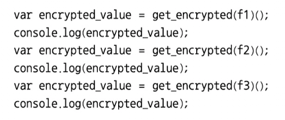

자바스크립트에서의 함수형 프로그래밍
자바스크립트에서도 함수형 프로그래밍이 가능하다. 그 이유는 자바스크립트가 다음을 지원하기 때문이다. * 일급 객체로서의 함수 * 클로저 이를 쉽게 이해하려면 앞에서 언급한 암호화 예를 자바스크립트로 구현해 보자.

이처럼 자바스크립트에서 앞서 예로 든 함수형 프로그래밍 슈도 코드를 구현할 수 있다. 이것이 가능한 이유는 앞서 언급한 대로 함수가 일급 객체로 취급되기 때문이다. 그래서 함수의 인자로 함수를 넘기고, 결과로 함수를 반환할 수도 있다. 게다가 변수 str 값이 영향을 받지 않게 하려고 클로저를 사용하였다. 예제 7-1에서 get_encrypted() 함수에서 반환하는 익명 함수가 클로저이다. 이 클로저에서 접근하는 변수 str은 외부에서는 접근할 수 없으므로 클로저로 함수형 프로그래밍의 개념을 정확히 구현해낼 수 있다. 다음 절에서는 자바스크립트를 이용하여 간단한 수학적인 문제를 함수형 프로그래밍 방식으로 코드를 작성하는 방법을 소개한다.